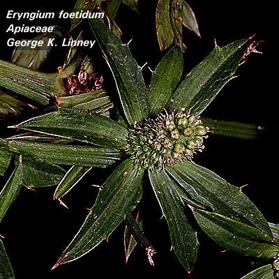
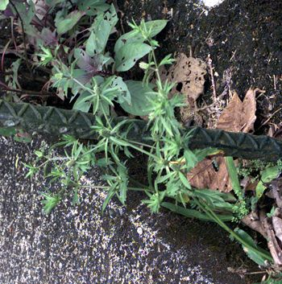

|
ECONOMICALLY
IMPORTANT PLANTS OF INDIA |
| Under-utilized Food and Fodder species and their wild relatives | Contributed by Ms.M.L Annapurna And Dr. Dhanapal, UAS, Bangalore |
Eryngium foetidum Linn.

Taxonomic
Details
----- Correct Name
----- Classification
----- Synonyms
----- Common Names
Other Biological Details
----- Habit and Habitat
----- Diagnostic Features
----- Reproductive Biology
---------- Breeding System
---------- Phenology
---------- Pollinators
---------- Seed Biology
----------Seed Germination
-----------Cultivation
----- Major Pests and Diseases
Economic Potential and Uses
----- Parts Used
-----Uses
----- Harvesting Practices
----- Produce and Products
----- Chemistry
----- Processing Techniques
----- Other uses
----- Economic Potential to the
Country
----- Export Potential
Miscellaneous Information
Literature
Correct
Name :Eryngium
foetidum Linn

Family : Umbelliferae
Synonyms :
Common Names :
Assam-Jongali-memedo,
podomosolla
HABIT & HABITAT
A
large genus of spinescent glabrous herbs, rarely shrubs, distributed in tropical
and temperate regions. Three species occur in India. It occurs in Assam up to an
altitude of 5,000 ft.
It is mainly seen along the margins of forests, fallow land, Jhummed areas, Open
areas, Sugar cane fields, tea gardens an d Vegetable fields,
BioticZone: Ghat.
Misc: Amidst grasses, Chandanathode, Kumaon, Manantoddy and Sindh.
Country: India,
Zone: Central, North, North East and South zone.,
State: Arunachal Pradesh, Assam, Karnataka, Kerala, Meghalaya, Punjab, Tripura
and Uttar Pradesh.
District: Cannanore, Changlang, Dakshin Kannada, Lohit, Siang and Tirap.
Availability :
Status :
DIAGNOSTIC
FEATURES
A
much branched aromatic herb, with spathulate, spinous, toothed leaves, white
flowers, ellipsoid fruits and semi-terete seeds.
REPRODUCTIVE
BIOLOGY
Breeding System :
Phenology : The flowering occurs during February
- November and there are reports of flowering specifically during May-September.
Pollinators:
Seed Biology :
Seed Germination:
MAJOR
PESTS & DISEASES
Pests:
Diseases:
2.The
plant has been used as cattle fodder in Java.
Harvesting
Practices
Chemistry
The
volatile oil distilled from the herb (yield, 0.02-0.04% ) has the following
constants : sp. gr.260, 0.905; [a] , + 0°42'; acid val., 29.5; sap. val., 65;
and sap. val. after acetylation, 327. The main constituent of the oil is
2-dodecen-l-al. The distillation waters yield a solid acid soluble in benzene (m.p.,
165-66°; acid val., c. 330). The roots contain saponin.
2.The
root is considered stomachic.
The wealth of
.jpg){kind=link}

.jpg){kind=link}